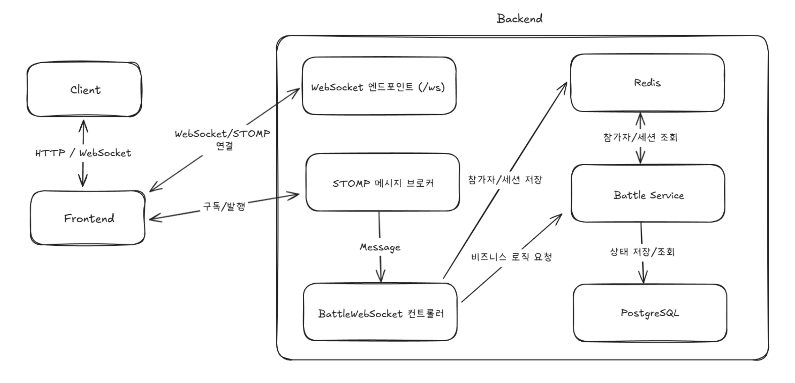
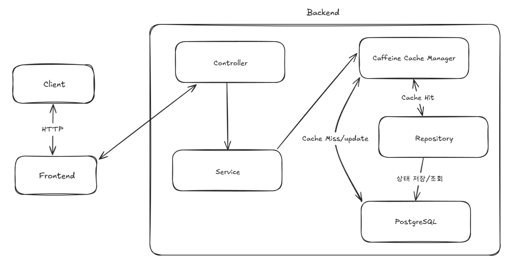

프로젝트 개요
단순 퀴즈 풀이를 넘어 사용자 간의 상호작용을 통해 학습 재미와 동기를 부여하는 실시간 퀴즈 배틀 플랫폼입니다.
Spring WebSocket과 STOMP를 활용하여 여러 사용자가 동시에 참여하고 실시간으로 순위와 점수를 겨루는 기능을 제공합니다.
1. Spring WebSocket을 활용한 실시간 퀴즈 배틀 기능 구현

cram-websocket-architecture.png
배경 및 문제 원인
- 단순 퀴즈 풀이를 넘어 사용자 간의 상호작용을 통한 학습 재미와 동기 부여 증진 필요성 대두
- 기존 단방향 HTTP 요청/응답 방식으로는 실시간 배틀 상태(참가자 입장/퇴장, 준비 상태, 문제 출제, 정답 제출, 점수 변화, 시간제한 등)를 효율적으로 동기화하기 어려움
- 폴링(Polling) 방식은 불필요한 트래픽 유발 및 실시간성 저하 문제 발생
해결 과정
- 실시간 양방향 통신을 위해 Spring WebSocket과 STOMP 메시징 프로토콜 도입
BattleWebSocketController 구현 — 메시지 엔드포인트(/pub/battle/**)와 구독 경로(/sub/battle/room/{roomId}) 정의- Spring 내장 Simple Message Broker를 활용하여 특정 배틀방(
roomId)을 구독 중인 클라이언트에게만 상태 변경 메시지 전송
- 배틀방 및 참가자 상태를 JPA 엔티티로 관리하고, 상태 변경 시 DTO로 변환하여 구독자들에게 전송
- 동시 정답 제출 시 동시성 문제 관리를 위해 배틀방 상태 변경 로직에 동기화 처리 적용 (
@Synchronized, 추후 Redis 분산 락 활용 검토). 배틀 상태는 BattleRoomStatus Enum으로 관리
결과
- 여러 사용자가 동시에 참여하여 퀴즈를 풀고 실시간으로 순위와 점수를 확인할 수 있는 인터랙티브한 퀴즈 배틀 기능 구현
- 폴링 방식 대비 서버 및 네트워크 부하 감소 및 실시간성 보장
- WebSocket 및 STOMP 기반의 실시간 메시징 아키텍처 구축 경험 확보
2. Caffeine 캐시 적용을 통한 퀴즈 API 성능 최적화

cram-caffeine-architecture.png
배경 및 문제 원인
- 사용자가 퀴즈 목록 조회, 퀴즈 상세 정보 조회 등 특정 API를 반복적으로 호출
- 인기 퀴즈나 데일리 퀴즈(
DailyQuiz)의 경우, 요청마다 DB를 조회하는 것은 비효율적이며 응답 속도 저하 및 DB 부하 증가의 주요 원인
- 사용자 증가 시 성능 저하 심화 우려
해결 과정
- 반복 조회 데이터의 DB 접근 최소화를 목표로 캐싱 전략 도입 결정
- Spring Cache 추상화(
@Cacheable, @CachePut, @CacheEvict)를 활용하여 비즈니스 로직과 캐싱 로직 분리
- 로컬 캐시(Caffeine) 적용 — 자주 접근되지만 변경 빈도가 낮은 데이터(퀴즈 상세 정보, 태그 정보)에 적용
- 데이터 변경(수정/삭제) 시 관련 캐시를 무효화(
@CacheEvict)하는 로직으로 일관성 유지
- k6 성능 테스트 도구를 활용하여 캐시 적용 전/후의 응답 시간(latency) 및 처리량(TPS) 비교 측정
70%
응답 속도 단축
주요 퀴즈 조회 API
k6 테스트 결과 기반
0%
실패율 (개선 후)
DB 부하 해소로
시스템 안정성 확보
결과
- 주요 퀴즈 조회 API의 평균 응답 속도 약 70% 이상 단축 (k6 테스트 결과 기반)
- 동일 요청에 대한 DB 조회수 현저히 감소, 시스템 전반의 부하 감소 및 안정성 향상
- 로컬 캐시와 분산 캐시의 특성을 이해하고 상황에 맞게 적용하는 다중 캐싱 전략 경험 확보